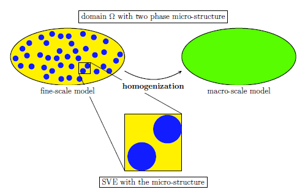

Chemo-Mechanical Problem - multi scale
Doable, but to solve a transit chemo-mechanical problem with three coupled unknown fields in a realistic dimension is rather computational expensive. Instead of using the classical finite elmente approach, this complex problem can be decomposed into an appropriately defined RVE (sub scale) with all featuring details from the actual probelm and a corresponding homogenized macro scale problem with the actual dimension.
 Fig. 1: schematic diagram of decomposition of a fine scale problem using multi-scale method.
Running Averaging on RVE
The homogenization of macro scale problem is introduced by using the running averages on RVE. This approach for a $\diamond$ quantity is denoted for volume and surface as following respectively:
\[\begin{align} \langle \diamond \rangle _{\square} &:= \frac{1}{|\boldsymbol \Omega _{\square}|} \int_{{\boldsymbol \Omega} _{\square}} \diamond \ d \boldsymbol \Omega \\ \langle \langle \diamond \rangle \rangle _{\square} &:= \frac{1}{|\boldsymbol \Gamma _{\square}|} \int_{{\boldsymbol \Gamma} _{\square}} \diamond \ d \boldsymbol \Gamma \end{align}\]
where the corresponding homogenized macro scale field $\bar \diamond$ is thus defined as $\bar \diamond := \langle \diamond \rangle _{\square}$ . This approach allows the fine(sub) scale quantities upscale into the macro scale.
Hierarchical Decomposition
For the chemo-mechanical problem, unknown fields displacement $\boldsymbol u$ and chemical potential $\boldsymbol \mu$ can be decomposed into (smooth) macro-scale $\diamond ^{M}$ and (fluctuating) sub-scale $\diamond ^{s}$, where the macro-scale parts will be prescribed using Taylor expensions in each RVE. Since the sub-scale unknown field concentration $\boldsymbol c$ will not be considered in macro scale problem due to its localization, no such decomposition is needed for it.
Thus, using first order Taylor expension(linear variation) the homogenized fields $\bar{\boldsymbol u}$ and $\bar{\boldsymbol \mu}$ are defined as follows:
\[\begin{align} \boldsymbol u^\text{M}[\bar{\boldsymbol u}](\bar{\boldsymbol x}, \boldsymbol x ) &= \bar{\boldsymbol u}(\bar{\boldsymbol x}) + \bar{\boldsymbol \xi}(\bar{\boldsymbol x}) \cdot [x - \bar{\boldsymbol x}], \ \ \bar{\boldsymbol \xi} := \bar{\boldsymbol u} \otimes \boldsymbol \nabla, & \ x \in \boldsymbol \Omega_\square \\ \boldsymbol \mu^\text{M}[\bar{\boldsymbol \mu}](\bar{\boldsymbol x}, \boldsymbol x ) &= \bar{\boldsymbol \mu}(\bar{\boldsymbol x}) + \bar{\boldsymbol \zeta}(\bar{\boldsymbol x}) \cdot [x - \bar{\boldsymbol x}], \ \ \bar{\boldsymbol \zeta} := \boldsymbol \nabla \bar{\boldsymbol \mu} , & \ x \in \boldsymbol \Omega_\square \end{align}\]
where $\bar{\boldsymbol x}$ is centriod and also holds to the upscaling rules mentioned earlier.
Upscaling
After inserting the hierarchical decomposition $\boldsymbol u = \boldsymbol u ^\text{M} + \boldsymbol u ^\text{s} \in \mathbb U ^\text{M} \oplus \mathbb U ^\text{s}$ and $\boldsymbol \mu = \boldsymbol \mu ^\text{M} + \boldsymbol \mu ^\text{s} \in \mathbb M ^\text{M} \oplus \mathbb M ^\text{s}$ and the upsacling assumption $\bar \diamond := \langle \diamond \rangle _{\square}$ into the fine scale week form:
\[\begin{align} \int_{\Omega} \langle \boldsymbol \sigma (\boldsymbol \varepsilon[\boldsymbol u ^{M}[\bar {\boldsymbol u}] + \boldsymbol u ^\text{s}],\boldsymbol c ^\text{s}) : \boldsymbol \varepsilon[\boldsymbol u ^{M}[ \delta \bar {\boldsymbol u} ]+ \delta\boldsymbol u ^\text{s}] \rangle _\square \ d\Omega &= \int_{\Gamma_N^\text{(u)}} \boldsymbol t^\text{p} \cdot \delta \bar{\boldsymbol u} \ d\Gamma &\ \forall \delta (\bar{\boldsymbol u}, {\boldsymbol u} ^\text{s}) &\in \bar {\mathbb{U}}^\text{0} \oplus \mathbb U ^\text{s} \\ \int_{\Omega} \langle \dot{\boldsymbol c} ^\text{s} \ [\mu ^\text{M} [\delta \bar{\boldsymbol \mu}] + \delta\mu^\text{s}] \rangle _\square \ d\Omega - \int_{\Omega} \boldsymbol \langle j(\boldsymbol \nabla[\mu ^\text{M} [\bar{\boldsymbol \mu}] + \mu^\text{s}]) \cdot \boldsymbol \nabla[\mu ^\text{M} [\delta \bar{\boldsymbol \mu}] + \delta\mu^\text{s}] \rangle _\square \ d\Omega &= \int_{\Gamma_N^{\mu}} \boldsymbol h^\text{p} \delta \bar{\boldsymbol \mu} \ d\Gamma &\ \forall \delta (\bar{\boldsymbol \mu}, {\boldsymbol \mu} ^\text{s}) &\in \bar {\mathbb{M}}^\text{0} \oplus \mathbb M ^\text{s} \\ \int_{\Omega} \langle ([\mu ^\text{M} [\bar{\boldsymbol \mu}] + \mu^\text{s}] - \boldsymbol \mu^\text{en}(\boldsymbol \varepsilon[\boldsymbol u ^\text{M}[\bar {\boldsymbol u}] + \boldsymbol u ^\text{s}], \boldsymbol c^\text{s})) \delta \boldsymbol c^\text{s} \rangle _\square \ d\Omega &= 0 &\ \forall \delta \boldsymbol c^\text{s} &\in \mathbb{C}^\text{0} \end{align}\]
so that with setting $\delta \boldsymbol u^\text{s}, \delta \boldsymbol \mu^\text{s}, \delta \boldsymbol \mu^\text{s}$ to 0, the globally coupled macro scale problem is defined.
Weak Format Macro Scale
\[\begin{align} \int_{\Omega} \bar{\boldsymbol \sigma} : \boldsymbol \varepsilon[\delta \bar{\boldsymbol u}] \ d\Omega &= \int_{\Gamma_N^{(u)}} \boldsymbol t^\text{p} \cdot \delta \bar{\boldsymbol u} \ d\Gamma &\ \forall \delta \bar{\boldsymbol u} \in \bar{\mathbb{U}}^{0} \\ \int_{\Omega} \dot{\bar{\boldsymbol c}} \ \delta \bar{\boldsymbol \mu} \ d\Omega - \int_{\Omega} (\bar{\boldsymbol j} - \dot{\bar{\boldsymbol c}}_\text{2}) \cdot \boldsymbol \nabla[\delta \bar{\boldsymbol \mu}] \ d\Omega &= \int_{\Gamma_N^{(\mu)}} \boldsymbol h^\text{p} \delta \bar{\boldsymbol \mu} \ d\Gamma &\ \forall \delta \bar{\boldsymbol \mu} \in \bar{\mathbb{M}}^{0} \end{align}\]
with the variationally consistent macro scale homogenized fields:
\[\begin{align} \bar{\boldsymbol \sigma} &:= \langle \boldsymbol \sigma \rangle _\square = \langle \boldsymbol E \colon [\boldsymbol \varepsilon[\boldsymbol u]-\boldsymbol \alpha^\text{ch}[\boldsymbol c - c_{ref}]] \rangle _\square \\ \bar{\boldsymbol j} &:= \langle \boldsymbol j \rangle _\square = -\langle \boldsymbol M \cdot \boldsymbol \zeta[\boldsymbol \mu] \rangle _\square \\ \bar{\boldsymbol c} &:= \langle \boldsymbol c \rangle _\square \\ \bar{\boldsymbol c_{2}} &:= \langle \boldsymbol c [\boldsymbol x - \bar{\boldsymbol x}] \rangle _\square \end{align}\]
Boundary Condition RVE
While fully adapting the micro structural details from fine scale problem identically for every macroscale quandrature point, in order to establish a consistent boundary condition for a uniquely solvable RVE Problem:
\[\begin{align} \bar{\boldsymbol \varepsilon} &:= \langle \langle \boldsymbol \varepsilon \rangle \rangle _\square \\ \bar{\boldsymbol \mu} &:= \langle \langle \boldsymbol \mu \rangle \rangle _\square \\ \bar{\boldsymbol \zeta} &:= \langle \langle \boldsymbol \zeta \rangle \rangle _\square \end{align}\]
Time Stepping
For every time step the RVE problem is going to be solved at the corresponding quadrature point. The four variationally consistent macro scale fields are updated using new RVE results at current time step. New stiffness matrix $\boldsymbol K^\text{n}$ is then computed with the new variationally consistent macro scale fields. A time dependent boundary condition is applied on both $\boldsymbol K^\text{n}$ and $\boldsymbol f^\text{n}$.
\[\begin{align} \boldsymbol K^\text{n}(\bar{\boldsymbol \sigma}^\text{n}, \bar{\boldsymbol j}^\text{n}, \bar{\boldsymbol c}^\text{n}, \bar{\boldsymbol c_\text{2}}^{n}) \boldsymbol a^\text{n} &= \boldsymbol f^\text{n} \\ \boldsymbol a^\text{n} &= (\boldsymbol K^\text{n})^\text{-1} \boldsymbol f^\text{n} \end{align}\]